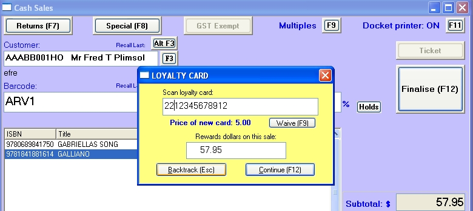

This function is now obsolete due to it being abandoned by the retailers.
Bookscan will now work with Graphicard style loyalty cards as used by A&R and Dymocks.
Note: You will require an Bookscan EFTPOS license to use this feature. Contact Barcode Solutions to obtain one.
Overview Customers can be issued with a rewards card that is swiped when they make a transaction.
The total rewardable amount will then be displayed at the end of each sale. Users then swipe the card in the Graphicard terminal and enter the rewardable amount of the sale. If the customer has reached the appropriate reward level, the terminal will issue a voucher giving so many dollars off the next purchase along with any on-the-spot prizes won.
Setting up loyalty cards Set up a product in the Title Master to be the default rewards card. Use this product to keep track of the rewards cards you have in stock.
Open the Options tab of System options and set the default Rewards Card to be this product code. Also on this tab set the price of the rewards card. E.g. say the cards are $10 when the (rewardable) sale is from zero up to $50, $5 for sales $50 and over and under $100 and free for sale $100 and over. Set the fields as follows:
Purchase up to 50.00 $10.00
Purchase below 100.00 $50.00
Selling rewards cards
See the selling special products section above for details.
Using a loyalty card
At the end of a transaction that has a rewardable sale amount, the rewards card
popup window will appear before the Tendering window opens.
If the customer has a rewards card, swipe the card in the popup window. The window will close and the tendering window will open. When the tendering window closes the Change window will display any change as well as the rewardable amount. This amount should be entered in the Graphicard terminal.
If the customer doesn't have a rewards card and wants to buy one now, click the backtrack button (or press the escape button) and add one to the sale.
If the customer doesn't have a rewards card and doesn't want to one, press the Continue button (F12).
Notes on loyalty cards
Rewards points and card numbers also print on the sale dockets.
Laybys are not rewarded until the final payment is made, though you can scan the card when creating the layby.
Advantages of using the loyalty card module
Bookscan will control the variable pricing of loyalty card sales.
The rewardable amount of each purchase is calculated and displayed on the screen and is printed on the sale docket.
Products flagged as 'no reward' will not be included in the rewardable total.
If a customer part pays for his purchase using a rewards voucher, this amount is deducted from the rewardable total.
Selling loyalty cards To sell loyalty cards, you must first set up a product code for them in the master file. See the section above for details on doing this.
Loyalty card selling prices can vary with the amount of the transaction. For example, you may set the card up to have a standard price of $10. If the customer spends between $50 and $100 in the same transaction, the price may drop to $5. If they spend over $100, the card is free. These prices are set on the Options tab of System Options.
See the Loyalty Cards section below for details on this functionality.
To sell a loyalty card, enter the loyalty card product code in the Barcode field in the POS window. A small popup window will be displayed. Scan in a blank card's barcode. The price of the card and the rewards dollars so far processed for this sale will be displayed.

If the card is to be free the product will be saved direct to the browser.
If it has a price it will you will be able to waive the charge by pressing the Waive button in the popup window.
If the customer makes further purchases in this transaction, the program will change the price of the card.